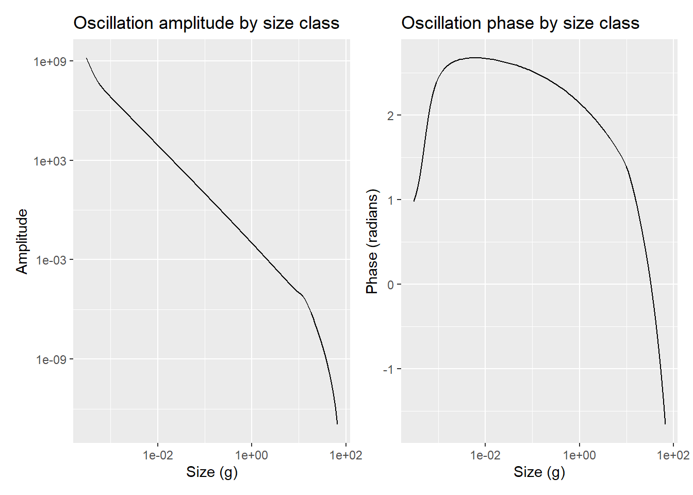
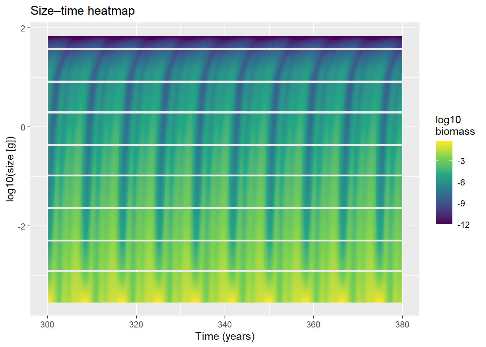

Day 8: FFT, Scaling Laws, and Hunting the Traffic Jam
research
mizer
fft
cohort-wave
traffic-jam
lambda
seasonal
blog
Decomposing the oscillation signal with FFT, confirming the generation-time scaling law, investigating the phase structure across size classes, and beginning to use fishing to see whether that alleviates the bottleneck.
Author
Samia
Published
June 17, 2026
Where Day 7 Left Us
Day 7 confirmed the oscillation mechanism: a food-limitation cycle concentrated in juvenile size classes, with feeding level at the smallest fish dropping to 0.244 at the plankton trough. The feeding level animation revealed an asymmetric waveform - long plateau, sharp crash, fast recovery - and raised the question of whether the signal was composed of multiple frequencies or a single nonlinear oscillation.
Three analyses were queued: FFT on the projection, a w_mat sweep to test whether the period scales with generation time, and cohort tracking to distinguish a standing wave from a travelling cohort wave. Today covered all three, and then opened a new thread on the traffic jam.
FFT: Decomposing the Signal
The power spectrum was computed for both the Anchovy biomass time series and the feeding level at the smallest size class, using the settled portion of sim_600 (t > 300):
Both spectra show the same structure: one sharp dominant peak at ~8–9 years, a cluster of smaller peaks at shorter periods (~2–5 years), and a broad red-noise background at long periods.
The secondary peaks are harmonics - they sit at approximately 1/2, 1/3 of the dominant period. This is the frequency-domain signature of a periodic but non-sinusoidal waveform: energy leaks into integer multiples of the fundamental. The sharp crash / long plateau shape seen in the feeding level animation is exactly what produces this harmonic series ; fast depletion generates high-frequency components, while the sustained recovery plateau suppresses them.
The feeding level spectrum has much stronger relative harmonic content than the biomass spectrum, which makes sense: the feeding level at the smallest size class is where the nonlinearity is sharpest (a near-instantaneous switch from saturation to ~0.24), so its waveform is more distorted. The biomass integrates over all sizes and smooths the signal.
The key result: one fundamental frequency, not two. If the oscillation were quasiperiodic (two incommensurate timescales interfering), the spectrum would show two sharp peaks at non-harmonically-related periods. That is not present. The complexity seen in the feeding level animation is the waveform shape of a single nonlinear feedback loop, not multiple mechanisms competing.
The y-axis (power) is the squared amplitude of the sinusoidal component at each period as it measures how much each frequency contributes to the total variance in the signal. The absolute power values are not comparable between the two plots (feeding level is dimensionless, biomass is g/m³), but the shapes are.
Period vs w_mat: The Scaling Law
If the ~8–9 year period is set by maturation time, it should scale predictably with w_mat. Twelve simulations were run across a range of maturation sizes (roughly 3–50 g), each perturbed and run for 600 years. The dominant period was extracted from the FFT of the settled biomass:
The result was a clean power law: Period ~ w_mat^0.2, with R² = 0.9974. There is essentially no scatter - the period is determined entirely by maturation size across the full range tested.
The exponent 0.2 has a direct metabolic interpretation. Juvenile growth rate in this model scales as w^n where n ≈ 0.8 (set by the search rate exponent). The time to grow from w_min to w_mat then scales as:
T_mat ~ w_mat^(1 − n) = w_mat^0.2
The slight deviation from the classic quarter-power scaling (0.25, which would imply n = 3/4) reflects the specific parameterisation: with search rate exponent q = 0.8 and lambda = 2, juvenile growth is dominated by encounter rate rather than metabolic maintenance, giving a slightly steeper scaling.
The combination of the FFT result (one frequency) and the w_mat scaling (clean power law, metabolically grounded exponent) gives a complete mechanistic picture: one feedback loop, one timescale, set by how long it takes juveniles to reach maturation.
Cohort Tracking: Phase Analysis
With the mechanism confirmed, the question became whether the oscillation is a standing wave (all sizes pulsing in sync) or a travelling cohort wave (a pulse of fish moving through the size spectrum). The DFT coefficient at the dominant frequency was computed for each size class independently:
Code
omega <-2* pi / period_dompost <- times >300t_post <- times[post]t_vec <- t_post - t_post[1]n_post <- sim_600@n[post, "Anchovy", ]coeffs <-apply(n_post, 2, function(x) { signal <- x -mean(x)sum(signal *exp(-1i * omega * t_vec))})df_phase <-data.frame(w = params@w,amplitude =Mod(coeffs),phase =Arg(coeffs))p_amp <-ggplot(df_phase, aes(x = w, y = amplitude)) +geom_line() +scale_x_log10() +scale_y_log10() +labs(x ="Size (g)", y ="Amplitude", title ="Oscillation amplitude by size class")p_phs <-ggplot(df_phase, aes(x = w, y = phase)) +geom_line() +scale_x_log10() +labs(x ="Size (g)", y ="Phase (radians)", title ="Oscillation phase by size class")p_amp + p_phs

The amplitude plot confirms what the feeding level already showed: the oscillation is overwhelmingly concentrated at juvenile sizes, with amplitude declining steeply across ~18 orders of magnitude from w_min to w_max. Large fish barely oscillate.
The phase plot is more informative. A pure cohort wave would show monotonically increasing phase (each larger size class lagging behind smaller ones). A pure standing wave would show flat phase. What appears is neither: the phase rises from ~0 at the smallest fish to a peak of ~2.5 radians around 0.01–0.05 g, then decreases continuously through sub-adults and adults, reaching ~−1.5 radians at 100 g.
Note on what “phase” means here: it’s Arg() of the DFT coefficient at the dominant frequency, computed a gainst t_vec <- t_post - t_post[1] - time measured from the first saved point after t = 300, an arbitrary cutoff with no biological meaning (not anchored to e.g. peak adult biomass or a spawning event). So the absolute phase values aren’t meaningful on their own; what matters is the relative phase across size classes, since every size class’s coefficient shares the same t_vec and omega. The lag/lead structure between sizes - not the literal radian values - is what supports the closed-loop interpretation below.
This non-monotonic pattern reveals a closed feedback loop. The causal chain is not a one-way wave travelling from small to large sizes - it circles back through reproduction:
Adults spawn → recruits appear at the smallest sizes
Recruits grow slowly through the food-limited juvenile bottleneck (accumulating phase lag)
Eventually mature into adults
Those adults spawn → new recruits
The reproductive connection between the large end of the spectrum and the small end is what produces the phase reversal. Adults and tiny recruits end up close in phase (adults peak, spawn, recruits appear shortly after), but the juvenile sizes in between carry the most lag because they spend extra time in the food-limited bottleneck. The delay that generates the ~8-year period lives in that bottleneck.
Space-time heatmap
The heatmap of the size spectrum over time confirms this directly:
Code
times <-as.numeric(dimnames(sim_600@n)[[1]])t_win <- times >300& times <380bm_win <-sweep(sim_600@n[t_win, "Anchovy", ], 2, params@w^2, "*")df_heat <-melt(bm_win)names(df_heat) <-c("time", "w", "bm")df_heat$time <-as.numeric(as.character(df_heat$time))df_heat$w <-as.numeric(as.character(df_heat$w))ggplot(df_heat, aes(x = time, y =log10(w), fill =log10(pmax(bm, 1e-12)))) +geom_raster() +scale_fill_viridis_c(name ="log10\nbiomass") +labs(x ="Time (years)", y ="log10(size [g])", title ="Size–time heatmap")

The heatmap shows vertical banding meaning all size classes brighten and dim together, in phase. A cohort wave would produce diagonal bands slanting from bottom-left to top-right. There are none. The oscillation is a synchronised food-limitation cycle.
Lambda: What It Controls and Why 2.05 Is Interesting
Lambda (λ) is the slope of the plankton size spectrum: N_R(w) ~ κ · w^(−λ). It controls how quickly plankton abundance falls off with prey size, and therefore how food availability scales across fish sizes.
With the model’s search rate exponent q = 0.8, the food encounter rate for a fish of size w scales as w^(q + 2 − λ). At λ = 2 this gives w^0.8, which is approximately the balanced point ; food availability rises with fish size at the same rate as maximum consumption, so the feeding level is roughly uniform across sizes. No size class is systematically more food-limited than another.
Changing lambda from 2.0 to 2.05, a shift of just 0.05, produced a dramatically different phase structure:
At λ = 2: smooth, gradual non-monotonic phase variation across sizes (the closed-loop structure described above)
At λ = 2.05: near-discontinuous phase jumps at two specific size ranges (~0.003–0.01 g and ~1 g), with the phase traversing almost the full ±π range almost instantaneously at those sizes
The heatmap at λ = 2.05 still shows vertical stripes but the oscillation remains fundamentally synchronous, and no cohort wave appears. The phase analysis detects a real structural reorganisation of the internal dynamics, but it doesn’t manifest as a macroscopic change in the heatmap.
This extreme sensitivity to a 0.05 change in lambda suggests the system is near a bifurcation point at λ = 2. The balanced community condition may be a structurally degenerate special case where the neutral food environment simplifies the oscillation into a clean closed-loop structure. Moving even slightly above this value breaks the symmetry and reveals sharper, more localised food-limitation effects at specific size ranges.
What’s Next
Connecting the traffic jam to fisheries: If the bottleneck is a real congestion effect at the juvenile food ceiling, fishing pressure on the right size classes might relieve it rather than just removing biomass. Worth testing whether harvesting juveniles or sub-adults thinsthe queue enough to let the remaining cohort grow through the bottleneck faster, and whether that translates into a net gain in average yield rather than a loss.
Flux at fishery-relevant sizes: Rather than tracking flux across the full size spectrum, plot growth/flux specifically at the size classes fisheries actually target (the catch-relevant range), to see whether the bottleneck shows up there as a throughput constraint on what’s effectively landable.
Yield vs time: Plot total (or size-selective) yield over time under different fishing mortality scenarios, to check whether yield itself oscillates with the ~8–9 year cycle, and whether fishing at the bottleneck size shifts the average yield up or down relative to no fishing.